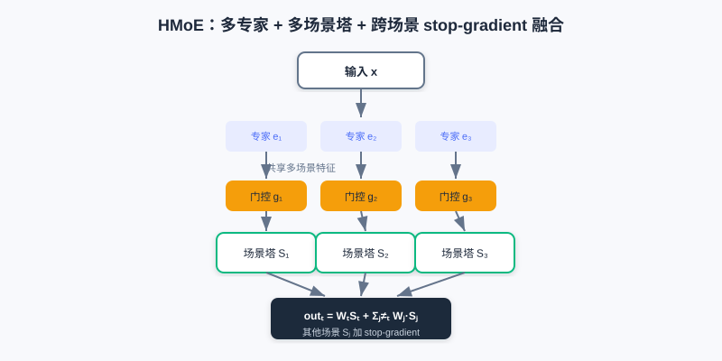
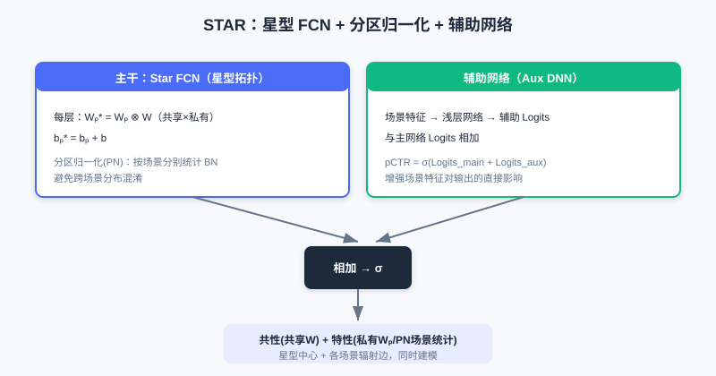
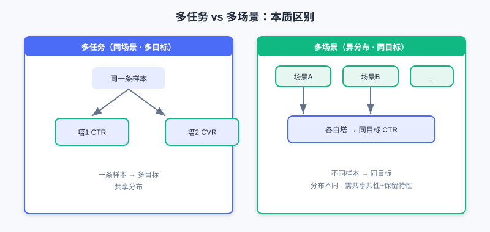
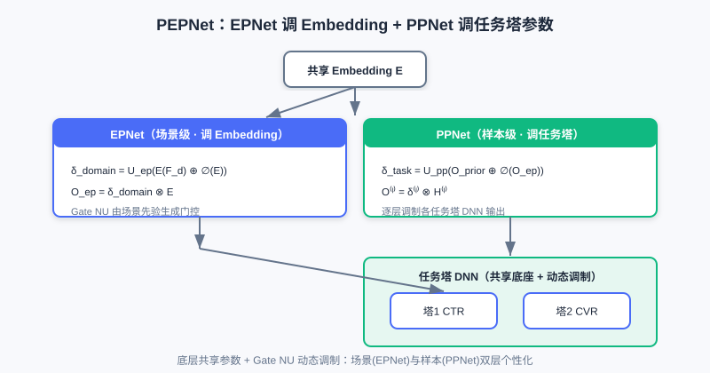

多场景建模
📝 Before You Continue: 建议先读完 3.4 多目标优化。多场景与多任务"形似神异"——多任务处理同场景多目标，多场景处理不同场景同目标，二者都建立在"共享 + 差异化"的设计哲学上。
3.4 解决了"同一条样本预估多个目标"的多任务问题。但工业推荐常面对多个场景：同一 App 可能有首页推荐、搜索结果页、购物车下方的"猜你喜欢"——这些场景数据分布不同，却要预估同一个目标（如 CTR）。这就是多场景建模。
若为每个场景训独立模型，会忽视场景共性、小场景数据少效果差、资源剧增；若混合样本训单一模型，又忽视场景差异、精度下降。本章我们从"多塔结构"（HMoE、STAR）讲到"动态权重建模"（PEPNet、APG、M2M），看如何兼顾场景共性与场景特性。
读完本章，你将能够：
- 区分多任务（同场景多目标）与多场景（不同场景同目标）的本质差异
- 解释 HMoE 如何用多专家 + 多场景塔 + 跨场景融合（含 stop-gradient）建模共性
- 说明 STAR 如何用"星型 FCN + 分区归一化 + 辅助网络"同时建模共享与私有参数
- 描述 PEPNet 的 EPNet/PPNet 如何用动态门控（Gate NU）调制共享参数
- 完成 4 道分层练习题，比较多场景结构的"物理隔离"与"动态调制"两条路线
3.5.0 动机：多任务 ≠ 多场景
先厘清一个常见混淆：
- 多任务学习：同一样本、同一场景，预估多个不同目标（如一条样本同时给 CTR、CVR）。
- 多场景建模：不同场景、不同分布，预估同一个目标（如不同场景各预估 CTR）。
前者是"一条样本多目标"，后者是"不同样本同目标"。多场景若用独立模型忽视共性（小场景差、资源炸），若混训单一模型忽视差异（精度降）。
💡 Key Insight: 多场景建模的核心张力是——如何在共享底层参数（抓共性）的同时，让模型感知场景差异（抓特性）。本章两条路线：①多塔结构（物理隔离部分参数）；②动态权重（共享参数 + 场景/样本调制）。
🧠 Mental Model: 连锁店 vs 中央厨房
把多场景想成一家公司的多个门店（场景）。① 多塔结构像"每个门店有自己的后厨（场景塔），但共享中央厨房的半成品（共享专家）"。② 动态权重像"所有门店用同一套中央厨房，但每个门店有一台'口味调节器'（Gate NU），按本地顾客偏好微调同一份菜"。前者分厨房，后者调味道。
3.5.1 多塔结构：HMoE 与 STAR
HMoE（Hierarchical Mixture-of-Experts） 借鉴 MMoE：底层多专家提多场景共享特征，顶层是多个场景塔（而非多任务塔）。对场景 ，底层经门控融合专家得 ，最终打分融合多场景输出：
关键是：融合其他场景打分时，用 stop-gradient 阻断其梯度回传——避免场景 的样本直接改场景 的参数，保住场景感知。这使某场景 既用自己的塔，也借其他场景打分作参考，又不互相污染。

HMoE 底层多专家提取跨场景共享特征，顶层每个场景一个专属场景塔；融合他场景打分时用 stop-gradient 阻断梯度，既借共性又互不污染。
STAR（Star Topology Adaptive Recommender） 用星型拓扑同时建模共享与私有参数。其 STAR FCN 对每个场景的层参数做"共享 + 私有"的元素积融合：
其中 分别是场景私有与全局共享参数。STAR 还有两项创新：分区归一化（PN）——按场景分别统计 Batch Norm 的均值/方差（避免跨场景统计混淆）；辅助网络——把场景特征经浅层网络得辅助 Logits，与主干相加：。

STAR 用星型 FCN 把"共享中心 × 场景私有"做元素积融合，再配分区归一化（按场景分别统计）与辅助网络，在参数与归一化两层都区分场景。

左：多任务——同一样本、多目标塔。右：多场景——不同场景样本、同目标塔；挑战是共享共性与保留差异。
Analysis: 多塔结构（HMoE/STAR）用"物理隔离的部分参数"保场景特性，直观、可解释。HMoE 的 stop-gradient 防场景污染；STAR 的星型 FCN + PN 在参数与归一化两层都分场景。代价是参数量随场景数增长（每场景一份塔/私有参数）。
3.5.2 动态权重建模：PEPNet
多塔靠"分厨房"保特性，但参数不够共享。PEPNet（Parameter and Embedding Personalized Network）换思路：核心网络参数跨场景共享，但通过动态生成的、与场景/样本高度相关的权重来"调制"（Modulate）共享参数的行为——相当于给共享网络注入上下文。
PEPNet 的核心是轻量门控单元 Gate NU（受语音识别 LHUC 启发），用两层网络生成动态缩放权重：
输出 与目标参数维度对齐，通过逐元素相乘 实现调制。PEPNet 用两大模块做分层个性化：
- EPNet（场景感知 Embedding 个性化）：把场景先验信息经 Gate NU 生成门控 ，与共享 Embedding 元素乘得场景个性化 Embedding 。注意对共享 Embedding 用 stop-gradient，不影响底层学习。
- PPNet（用户感知参数个性化）：把用户/内容/作者 ID 先验 + EPNet 的场景 Embedding 作输入，生成逐层、逐任务塔的门控 ，对任务塔 DNN 每层输出做调制 。这是样本粒度（而非任务粒度）的个性化，缓解多任务跷跷板。

Gate NU 由场景/用户先验生成动态缩放权重；EPNet 调制共享 Embedding（场景个性化），PPNet 调制各任务塔 DNN（样本个性化），底层仍共享。
3.5.3 动态参数生成：APG 与 M2M
APG（Adaptive Parameter Generation） 走得更远：根据样本直接动态生成该样本对应的参数。把样本感知输入 经 MLP reshape 成参数矩阵 ，预测 。为控开销，APG 做低秩分解：，其中私有因子 从样本生成、共享因子 固定；前向用分解计算 降低复杂度。共享 刻画共性、私有 刻画特性，兼顾容量与效率。
M2M（元学习多场景多任务） 用元学习器（MLP）根据场景/输入特征动态生成任务模型的参数 。主干网络含专家表征 、任务表征 、场景表征 ；元学习单元把场景表征 转成每层动态参数，作用于特征（类似注入了场景信息的 MLP）。它还在专家融合（Attention 元网络，融合时引入场景）与多任务塔（Tower 元网络，残差方式）都用了元学习单元，实现细粒度场景自适应。
💡 Key Insight: 多场景建模的两条路线殊途同归——多塔结构用"物理隔离的参数空间"保特性（分而治之）；动态权重/参数生成用"共享底座 + 动态调制"保特性（注入上下文）。后者参数更高效、更灵活，但对调制/生成机制设计要求更高。
⚠️ Common Mistakes in 3.5
| # | Mistake | Example | Why It's Wrong | Fix |
|---|---|---|---|---|
| 1 | 把多场景当多任务 | "多场景就是多任务，换名字而已" | 多场景=不同分布同目标；多任务=同分布多目标 | 先判"样本分布是否不同" |
| 2 | HMoE 融合不打 stop-gradient | "跨场景打分直接相加梯度也回传" | 场景 a 样本会改场景 b 参数，污染感知 | 其他场景打分加 stop-gradient |
| 3 | STAR 忽略 PN 的动机 | "BN 全局统计就行" | 多场景混合样本不独立同分布 | 用分区归一化按场景分别统计 |
| 4 | 混淆 EPNet 与 PPNet | "两者都调任务塔" | EPNet 调 Embedding（场景），PPNet 调塔（样本） | EPNet=场景级，PPNet=样本级 |
本章小结
📌 Key Takeaways
| Concept | Key Points | Why It Matters |
|---|---|---|
| 多场景 vs 多任务 | 异分布同目标 vs 同分布多目标 | 建模前先分清问题类型 |
| HMoE 多塔 | 多专家+场景塔+跨场景 stop-gradient 融合 | 共享共性、保场景感知 |
| STAR 星型 | 共享⊗私有参数 + 分区归一化 + 辅助网络 | 参数与归一化都分场景 |
| PEPNet | Gate NU 动态调制：EPNet(Embedding)+PPNet(塔) | 共享底座+动态个性化 |
| APG/M2M | 样本/场景动态生成参数（元学习） | 最灵活，参数高效 |
❓ FAQ
Q1: 什么时候用多塔、什么时候用动态权重？
A: 场景数不多、差异大、要强可解释 → 多塔（HMoE/STAR）；场景多、参数效率敏感、要细粒度样本个性化 → 动态权重（PEPNet/APG/M2M）。二者也可组合。
Q2: STAR 的星型 FCN 为什么要元素积？
A: 让每个场景的最终参数是"共享中心 × 场景增量"——既继承共性，又带场景特性；乘法（而非仅相加）让私有参数对共享做"增强/抑制"式调制。
Q3: PEPNet 的 EPNet 为什么要对共享 Embedding stop-gradient？
A: 防止场景个性化门控支路的反向梯度破坏底层共享 Embedding 的通用学习，让"共性"与"场景差异"解耦。
前后关联
- 3.4（多目标） MMoE/PLE 思想在多场景中演化为 HMoE 的多专家+多塔；PEPNet 的 PPNet 同时缓解多任务跷跷板。
- Part 4 重排 在精排（多场景多目标打分）之上优化列表体验。
- 生成式推荐（下篇） 的端到端架构，可视为对"多场景/多任务分塔"的进一步统一。
Practice Problems
Work through all problems in order — they get progressively harder. Each has a complete solution you can reveal after yourself.
Problem 3.5.1 — 区分多任务与多场景 🟢 Easy
判断下列情形属于"多任务"还是"多场景"，并说明理由：
- (a) 同一首页推荐流，一条样本同时预估点击率与转化率。
- (b) 同一 App 的"首页推荐"与"搜索结果页"两个分布不同的流量，各自预估点击率。
💡 Solution (click to reveal)
Approach: 看"样本分布是否相同、目标是否相同"。
- (a) 多任务：同场景（首页）、同分布，预估多个不同目标（CTR、CVR）。
- (b) 多场景：不同分布（首页 vs 搜索）、不同样本，预估同一目标（CTR）。
Key points:
- 多任务=同分布多目标；多场景=异分布同目标。
- 二者都靠"共享+差异化"，但差异化针对的是"目标"还是"分布"。
Problem 3.5.2 — HMoE 的 stop-gradient 🟢 Easy
HMoE 在融合其他场景打分时用了 stop-gradient。请简述：若不用 stop-gradient，会发生什么问题？
💡 Solution (click to reveal)
Approach: 从"场景参数污染"角度想。
HMoE 融合公式里其他场景的 加 stop-gradient，是为阻断其梯度回传。若不用：场景 的样本在前向参与了场景 打分的融合，反向时梯度会顺着融合路径改到场景 的塔参数，使场景 的表示被场景 的样本干扰，模型对场景的感知下降，多场景效果变差。
Key points:
- stop-gradient 隔离跨场景梯度，保住"每场景只影响自身参数"。
- 这是 HMoE 既能借他场景信息、又不互相污染的关键。
Problem 3.5.3 — STAR 的创新点 🟡 Medium
STAR 相比"给每个场景独立训一个模型"，做了哪些共享设计来兼顾共性与特性？请列出至少两点并说明作用。
💡 Solution (click to reveal)
Approach: 回忆 STAR 的三大创新。
- 星型 FCN：——每个场景参数 = 共享中心 × 场景私有，既继承共性又带特性，避免完全独立模型。
- 分区归一化（PN）：按场景分别统计 BN 的均值/方差，避免多场景混合样本不独立同分布导致的统计混淆。
- 辅助网络：场景特征经浅层网络得辅助 Logits，与主干相加，增强场景特征对输出的直接影响。
Key points:
- 共性靠共享 / PN 共享参数；特性靠 / PN 场景私有统计。
- 比独立模型省参数、小场景也能借共性。
Problem 3.5.4 — 小场景与星型共享 🔴 Hard
STAR 用 ：每场景私有参数 与全局共享 元素积融合。若某场景数据极少，其私有参数 易过拟合。请结合星型结构说明：为何共享中心 能缓解该问题？并指出现 PN（分区归一化）在此场景的额外作用。
💡 Solution (click to reveal)
Approach: 从"私有参数量小、受共享约束"与"归一化稳定性"两个角度看。
- 最终参数是 ：私有 虽小样本易过拟合，但它只做"对共享中心 的增强/抑制"式调制，主体能力仍来自数据充足的共享 。私有参数维度相对小、且乘性受共享约束，过拟合影响被稀释——相当于用共享做正则。
- PN 按场景分别统计 BN 的均值/方差。小场景若混入全局混合批，统计量被大场景主导、归一化不稳；PN 让小场景用自己的统计，训练更稳，进一步缓解小样本下的表示偏移。
Key points:
- 星型 = 共享兜底 + 私有微调，天然抗小场景过拟合。
- PN 补充分布层面的场景隔离。
🏆 Challenge: 选路线论证
某平台有 6 个不同场景（首页/搜索/购物车/频道页/推送/信息流），都预估 CTR，其中 3 个场景数据极少。团队资源有限，希望参数高效且小场景不崩。请选择"多塔结构"或"动态权重"路线并说明理由（150 字内），并指出若选动态权重可用哪个具体模型打底。
💡 Hint
6 场景、参数敏感、小场景弱 → 选动态权重路线：共享底座+动态调制，参数高效、小场景借共享共性不崩。可用 PEPNet（Gate NU 调 Embedding 与塔）或 APG（样本动态生成参数）打底；多塔在 6 场景下参数随场景线性增长、小场景独立塔易欠拟合。